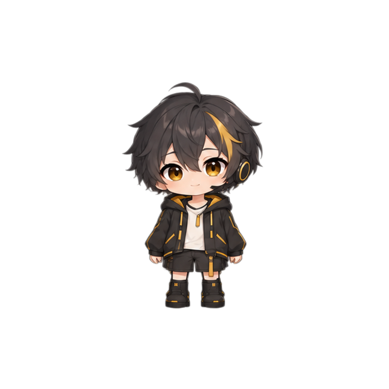

离线候选样片，不是线上版本。美术放行状态见 REVIEW.md；技术检查不能替代美术审查。
画布固定 768×768，原版头部、身体和脚部不漂移。正常播放中有中立停留；停留不是新增姿态。所有动作由完整 PNG 换帧播放，无整图渐变、骨骼拼装或整体左右移动。下方原版参考与样片使用同一固定画布。

原始关键帧、静区保护说明、真实补帧日志和全帧检查分别位于 generated、key-preparation.json、interpolation.json 与 review/。未运行 LoRA、ControlNet、IP-Adapter、EbSynth 或 ToonCrafter。